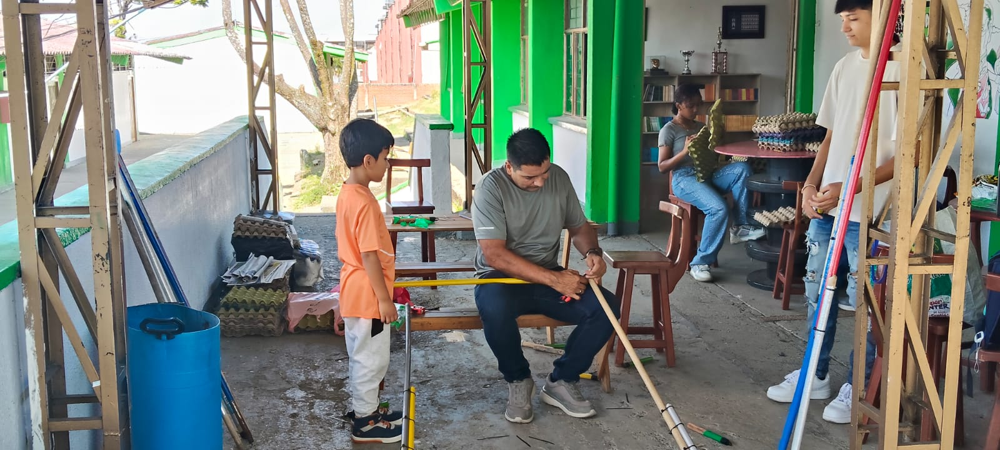

Luz es una cabina física con un asistente psicológico basado en IA, pensada para escuchar, orientar y acompañar a quien atraviesa una crisis emocional — y prevenir un posible caso de suicidio.

Pereira y los municipios cercanos registran tasas de suicidio por encima del promedio nacional. La salud mental no siempre llega a tiempo, y muchas personas no saben dónde pedir ayuda en el momento crítico.
Risaralda: tasa de suicidio sobre el promedio nacional
Rango de edad más afectado
Disponibilidad pensada para la cabina Luz
Costo para quien necesita hablar
Representa físicamente la "Zona Segura". Se diseña como una cabina geométrica que a su vez parece un escudo protector. En el centro, una puerta cálida invita a entrar, simbolizando la privacidad y el anonimato del entorno.